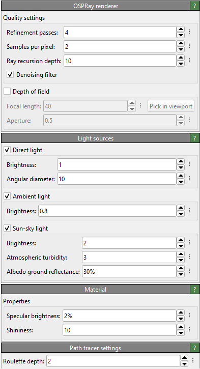

OSPRay renderer pro
{kind=link}
OSPRay is a software-based ray-tracing engine, which can generate high-fidelity scene renderings including global illumination effects, shadows and depth of field (focal blur). The OSPRay renderer has a smaller memory footprint than the Tachyon renderer. It is thus suitable for rendering very large datasets with higher visual quality than the default OpenGL renderer.
For more information on the capabilities of the OSPRay engine and its technical background, please visit the website https://www.ospray.org. The OSPRay documentation contains more in-depth information on this rendering engine’s various parameters.
The “More Options” (vertical ellipsis) button next to each nummerical parameter opens a context menu with the option to reset each paramter to its default value.
Quality settings
- Refinement passes
OSPRay uses a progressive rendering method, which further refines the generated image during each rendering pass. This parameter controls the number of refinement passes to compute (default value: 4).
- Samples per pixel
The number of ray-tracing samples computed per pixel of the output image (default value: 2). Larger values can help reduce aliasing artifacts and will yield better results if the depth of field option has been enabled.
- Ray recursion depth
The maximum number of recursion steps taken during ray-tracing (default value: 10). Normally, 1 or 2 is enough, but when rendering many overlapping semi-transparent objects, a larger recursion depth may be needed.
- Denoising filter
Applies a denoising filter to the rendered image to reduce Monte Carlo noise inherent to stochastic methods such as path tracing.
- Depth of field
Only objects exactly at a distance from the camera specified by the focal length will appear sharp when depth-of-field rendering is active. Objects closer to or further from the camera will appear blurred. If you want a specific object to be in the focus, use the Pick in viewport button and click on that object in the viewport to be rendered. The focal length parameter will be automatically adjusted so that the picked location is in focus. The aperture radius controls how blurred objects will appear that are out of focus (default: 0.5).
Light sources
- Direct light
Enables a directional light source positioned behind the camera and pointing roughly along the viewing direction. The angular diameter specifies the apparent size (angle in degrees) of the light source. Setting the angular diameter to a value greater than zero yields soft shadows. For instance, the apparent size of the sun is about 0.53°.
- Ambient light
The ambient light surrounds the entire scene and illuminates it from infinity with constant radiance.
- Sun-sky light
The sun-sky light produces the light typically coming from the sky and the sun in an outdoor scene. The radiance values are calculated using the Hošek-Wilkie sky model and solar radiance function. The zenith of the sky as well as the sun are positioned along the positive Z axis of the scene and are independent of the camera orientation.
Material
- Specular brightness
Controls the specular reflectivity of the material (default value: 2%).
- Shininess
This specular Phong exponent is usually in the range between 2.0 and 10000.0 (default value: 10.0).
Path tracer backend
- Roulette depth
Ray recursion depth at which to start Russian roulette termination (default value: 2).
See also
OSPRayRenderer (Python API)